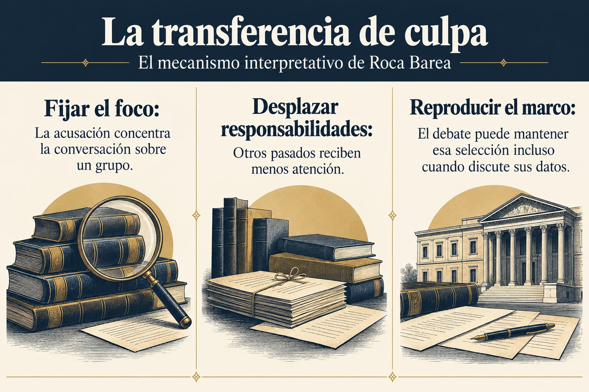

Volumen 4 · Capítulo 13 · Entrega 53
La transferencia de culpa
Estudio expositivo de Fracasología de María Elvira Roca Barea
Roca Barea llama transferencia de culpa al procedimiento por el que un grupo concentra el reproche sobre otro y reduce con ello la visibilidad de sus propias responsabilidades. En California, la condena de Colón o de Serra desplazaría la conversación hacia España y dejaría en segundo plano la violencia de la incorporación estadounidense. Para ella, el éxito de la operación no exige que todos acepten íntegramente la acusación. Basta con que el debate se organice de manera permanente alrededor de la culpabilidad hispana: defender, matizar y discutir esa acusación mantiene el foco en el mismo lugar.
La controversia sobre el 12 de octubre ofrece el ejemplo principal. Los símbolos que permiten a comunidades hispanas e italianas celebrar un pasado se presentan como motivos de vergüenza. Roca Barea interpreta ese cambio como una disputa por el prestigio de grupos que conviven en una misma sociedad. La desautorización del símbolo afecta a la capacidad de una comunidad para reconocerse en público. En la nota 519 incorpora incluso una recomendación retórica: evitar repetir el término acusatorio cuando se intenta responder a él. Esa recomendación pertenece a la estrategia discursiva de la autora; ayuda a entender por qué considera insuficiente la rectificación aislada de datos.
La referencia a René Girard amplía la explicación mediante el mecanismo del chivo expiatorio. A través de Girard y de Juan Alberto Sucasas Peón, el libro describe una forma de reconstrucción de la cohesión cuando un grupo vive conflictos o amenazas. La hostilidad interna puede converger sobre una víctima situada fuera de la pertenencia plena. El relato que la acusa oculta su función de víctima y permite experimentar la agresión como una acción legítima. Roca Barea aplica ese esquema a la posición de católicos e hispanos en relatos fundacionales de sociedades protestantes y, de manera particular, al mundo anglosajón estadounidense.
La aplicación combina memoria e identidad. Si la comunidad se define por oposición a una España intolerante, inquisitorial o destructora de indígenas, la condena de España puede funcionar como demostración de la propia inocencia. La autora considera que esa lógica opera por contraste antes que por un examen detenido de las actuaciones de cada grupo. Su referencia a Frazer y a la asociación de ideas busca explicar la eficacia de mecanismos simples de identificación. No se ofrece aquí una validación independiente de esa extensión antropológica; se reconstruye la explicación que permite a Roca Barea enlazar el caso californiano con la historia larga de la leyenda negra.
Un matiz esencial del apartado es el rechazo explícito del complot. La autora no imagina una reunión clandestina que organice cada campaña ni una voluntad única detrás de todas las acciones. Describe un mecanismo de autodefensa y afirmación que puede reproducirse porque está disponible en la cultura y proporciona beneficios de cohesión y autoestima. De ese modo, la coincidencia de conductas no necesita una dirección central. Comprender el fenómeno exige estudiar sus incentivos y su utilidad, además de identificar los errores históricos concretos de un mensaje.


Ampliar imagenLeer el esquema y sus referencias
- Fijar el foco. La acusación concentra la conversación sobre un grupo
- Desplazar responsabilidades. Otros pasados reciben menos atención
- Reproducir el marco. El debate puede mantener esa selección incluso cuando discute sus datos
Fuente de lectura: Roca Barea, Fracasología (2019), apartado desarrollado en la entrega 53. Esquema expositivo de la interpretación de la autora; no cita literal.
Se conserva el matiz de la entrega: la autora describe un mecanismo cultural e incentivos de reproducción, no una dirección conspirativa única.
La respuesta de las élites hispanas forma la otra mitad del mecanismo. Roca Barea sostiene que creyentes y no creyentes pueden compartir las mismas jerarquías culturales, aunque se distancien de una tradición religiosa. La secularización no garantiza haber examinado las imágenes de inferioridad aprendidas. Añade un incentivo profesional: la búsqueda de invitaciones, prestigio y reconocimiento en universidades extranjeras puede hacer costosa la impugnación de quienes distribuyen ese reconocimiento. La subordinación no se mantendría solo por imposición; también mediante ventajas individuales obtenidas al adaptarse a ella.
El caso de Serra muestra, según el libro, la pérdida de un patrimonio compartido. Español, balear, franciscano, novohispano y californiano, puede quedar sin defensores si cada identidad exige una pertenencia exclusiva. Los mexicanos que rechazan como ajeno el periodo virreinal y los españoles que reducen la cuestión a una memoria religiosa renuncian, en la lectura de Roca Barea, a una parte de su historia. La autora interpreta la retirada de símbolos como una reafirmación del control cultural sobre un territorio en el que los hispanohablantes no son únicamente recién llegados.
El capítulo termina conectando la inseguridad estadounidense ante China con la reactivación de viejos recursos de autoafirmación. Roca Barea sostiene que la percepción de una amenaza grande puede intensificar hostilidades hacia grupos menos poderosos, cuya condena ofrece una compensación simbólica. El pronóstico sobre la hegemonía estadounidense pertenece al horizonte del ensayo y no se actualiza aquí. Lo que cierra el argumento es la posibilidad de que un relato conserve utilidad después de desaparecer el enemigo hegemónico que lo originó. Las reflexiones finales reunirán esta persistencia con la responsabilidad de las élites y con las alternativas que la autora plantea.
Referencia de la entrega y criterio de lectura
Roca Barea, 2019, cap. 13, «La transferencia de culpa», notas 519–524.
El texto reconstruye el argumento de Roca Barea. Las alusiones a otras obras proceden del ensayo y no implican la consulta independiente de todas ellas. Criterio editorial de la colección.
Referencia de la entrega. Roca Barea, 2019, cap. 13, «La transferencia de culpa», notas 519–524.